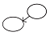

전자출판기능사 (2012-10-20 기출문제)
1과목: 출판론
1. 다음 중 여러 가지 금속들의 물과 기름에 대한 친화성을 이용한 것으로 내쇄력을 높이기 위해서 고안된 제판법은?
- 난백판
- 와이프온판
- 다층평판
- PS판
(정답률: 44%)

2. 다음 중 콜로타이프 인쇄의 제판법에 대한 설명으로 틀린 것은?
- 유리판의 지방이 완전히 제거되도록 연마하여 밑칠액을 칠한다.
- 물로 현상하면 노광된 정도에 따라 젤라틴 감광액의 팽윤온도가 달라진다.
- 현상된 판은 글리세린과 티오황산나트륨 수용액으로 판면의 팽윤처리를 한다.
- 중크롬산암모늄 감광액을 명실에서 유리판에 칠하고 상온에서 건조시킨다.
(정답률: 57%)
3. 다음 중 도서를 생산단계에서 소비단계로 원활한 이전을 촉진시키는 일은?
- 재판(再版)
- 출판유통
- 제작진행
- 제책(製冊)
(정답률: 92%)
4. 다음 중 양장제책의 작업공정을 가장 올바르게 나용한 것은?
- 재단→접지→쪽맞추기→책매기→트리밍→예비표지작업→표지작업
- 재단→쪽맞추기→접지→책매기→예비표지작업→트리밍→표지작업
- 접지→쪽맞추기→재단→책매기→트리밍→예비표지작업→표지작업
- 접지→쪽맞추기→책매기→재단→예비표지작업→트리밍→표지작업
(정답률: 36%)
5. 다음 중 책의 본문을 실이나 철사를 이용하여 꿰매는 대신에 접착제만으로 제책 작업하는 방식은?
- 양장
- 호부장
- 무선철
- 중철
(정답률: 78%)
6. 다음 중 평판제판시 빛쬠작업에서 빛의 밝기와 광원의 거리와의 관계로 옳은 것은?
- 비례한다.
- 반비례한다.
- 제곱에 비례한다.
- 제곱에 반비례한다.
(정답률: 47%)
7. 다음 중 제책시 책의 표면 가공 목적과 가장 관계가 없는 것은?
- 잉크 퇴색의 방지
- 내약품성의 증대
- 원가 절감의 효과
- 인쇄지면의 광택내기
(정답률: 84%)
8. 다음 중 출판의 개념으로 볼 때 출판물이 아닌 것은?
- 신문
- 도서
- 잡지
- 연감
(정답률: 62%)
9. 다음 중 출판기획에 있어 특정 시장성을 파악하는데 선행되어야 할 사항은?
- 독자조사
- 저자(역자)확보
- 경쟁대상조사
- 가격 책정
(정답률: 77%)
10. 다음 중 화선과 망점의 윤곽이 뚜렷하여 박력 있는 화상을 나타낼 수 있는 인쇄 방식은?
- 오목판
- 평판
- 볼록판
- 공판
(정답률: 70%)
11. 다음 중 출판기획을 위해 출판사 편집부가 해야 할 가장 중요한 업무는?
- 인쇄기의 상태를 점검한다.
- 출판하려는 책의 표지를 디자인 한다.
- 출판하려는 책의 내용을 정한다.
- 온라인 서점 고객을 위한 이벤트를 준비한다.
(정답률: 63%)
12. 책 본문 인쇄물을 접지기계로 3번을 접은 후 제책을 했다 이 인쇄물 한 장에 해당하는 총 쪽수는?
- 8쪽
- 16쪽
- 32쪽
- 64쪽
(정답률: 60%)
13. 다음 중 한국의 인쇄문화 전통에 대한 설명으로 적절하지 않은 것은?
- 한국은 금속활자의 발명과 함께 활판인쇄의 기계화를 선도하였다.
- 한국은 인류의 문화유산인 고려 대장경을 현재까지 보관하고 있다.
- 한국은 금속활자 인쇄물 뿐 아니라 목판인쇄로 만든 최초의 출판물도 보유하고 있다.
- 기록상으로 한국은 독일의 구텐베르크보다 약 200년 앞서 금속활자를 발명하였고, 독일보다 800여년 앞서서 금속활자로 인쇄한 책자는 뚜렷한 입증자료로 남아있다.
(정답률: 60%)
14. 다음 중 출판 기획을 크게 3가지로 구분할 때 가장 적합한 것은?
- 마케팅 기획, 색채 기획, 제책기획
- 편집기획, 제작기획, 마케팅 기획
- 저자조사, 마케팅 기획, 제책기획
- 편집 기획, 인쇄 기획, 조판 기획
(정답률: 86%)
15. 교정인쇄기와 본 인쇄기의 차이로 인해 인쇄된 결과물이 조금 다르게 재현 된다. 다음 중 이런 현상의 주요 원인으로 볼 수 없는 것은?
- 인쇄기 압력
- 기계 구조상의 차이
- 인쇄 속도
- 작업자의 수준
(정답률: 74%)
16. 다음 중 빛 도전성 절연체 표면을 이용하여 정정잠상을 만들어 형성시키는 제판법은?
- 전자사진법
- 전자 컴퓨터법
- 전자 출판법
- 컴퓨터 그래픽법
(정답률: 45%)
17. 다음 중 잡지에 대한 설명 중 틀린 것은?
- 잡지는 대체로 전문 잡지와 대중 잡지로 나눈다.
- 대중 잡지는 대체로 광고량이 많다.
- 전문 잡지는 대체로 광고량이 적다.
- 대중잡지와 전문 잡지의 목차는 표지 다음 장에 바로 나와 있다.
(정답률: 87%)
18. 다음 중 최근 출판물 판매에 가장 큰 영향을 주는 것은?
- 출판 검열
- TV, 인터넷의 뉴미디어
- 문고판의 성립과 발전
- 출판물의 대량생산
(정답률: 90%)
19. 다음 중 출판기획에 대한 설명으로 가장 적절한 것은?
- 출판기획을 할 때 다른 비슷한 출판물에 대한 조사는 독창성을 해칠 우려가 있으므로 하지 않는 것이 좋다.
- 출판기획에서는 단기기획뿐만 아니라 장기기획도 함께 고려해야 한다.
- 출판기획의 목표는 오직 베스트셀러를 만드는 것에 두어야 한다.
- 출판기획에서 판매예상 부수에 대한 고려는 통상 빛나가기 때문에 하지 않는 것이 좋다.
(정답률: 86%)
20. 다음 중 출판물의 광고매체인 다이렉트 메일(DM)의 특징이 아닌 것은?
- 출판물 내용의 일부를 내용 견본의 형태로 제공 할 수 있다.
- 우편법상 제한과 비용의 제약이 없어 신문과 잡지광고에 비하여 자유롭다.
- 독자카드를 통해 우수한 다이렉트 메일 대상자를 파악할 수 있다.
- 독자의 핵심대상을 좁혀 구매의욕을 높일 수 있다.
(정답률: 51%)
2과목: 전자 출판
21. 다음 중 전자출판물로 볼 수 없는 것은?
- 전자교과서
- 시디롬(CD-R) 잡지
- 비발디의 4계 오디오 시디(music CD)
- 초롱이의 한글 모험 시디롬(CD-ROM)
(정답률: 84%)
22. 다음 중 대용량의 저장매체이면서 다양한 멀티미디어기술을 구현할 수 있어서 출판매체로 자주 활용되고 있는 것은?
- DVD-ROM
- Video Disk
- Laser Vision
- Floppy Diskette
(정답률: 89%)
23. 다음 중 사진이나 그림을 인쇄 환경에 맞도록 편집하는 이미지 편집프로그램에 해당되는 것은?
- Explorer
- Flash Mx
- FontStudio
- Photshop
(정답률: 92%)
24. 다음 중 전자출판의 종류에 있어 패키지형에 속하는 것은?
- DTP
- CD-ROM
- PC통신을 이용한 전자출판
- 인터넷을 이용한 전자출판
(정답률: 85%)
25. 다음 중 종이책 데이터를 디지털화시키는 방법이 아닌 것은?
- 스캔(scan)하기
- 디지털 카메라로 촬영하기
- 키보드로 입력시켜 한글 파일 만들기
- 아날로그 사진기로 촬영하여 인화지에 뽑기
(정답률: 80%)
26. 다음 중 전자출판을 이용하여 종이책을 만드는 방법으로 틀린 것은?
- 한글을 이용하여 조판, 편집하여 책을 만들었다.
- Flash를 이용하여 컴퓨터 애니메이션을 만들었다.
- QuarkXpress를 이용하여 조판, 편집하여 책을 만들었다.
- 기자들이 기사를 데스크의 지시를 받아 CTS를 이용하여 신문을 만들었다.
(정답률: 75%)
27. 다음 중 전자출판의 요건과 거리가 먼 것은?
- 검색 기능이 있어야 한다.
- 등록된 출판사에서 발행되어야 한다.
- 디지털화된 데이터로 저장되어 있어야 한다.
- 독자들이 내용을 변경하여 재 저장할 수 있어야 한다.
(정답률: 86%)
28. 다음 중 전자출판물을 보호할 수 있는 저작권 보호 기술이 아닌 것은?
- XrML
- DRM
- INDECS
- Digital Watermark
(정답률: 56%)
29. 다음 중 전산편집시스템을 구성하기 위해 우선적으로 점검해야 할 작업 사항과 가장 거리가 먼 것은?
- 작업실 외부 환경은 어떠한가?
- 작업 품질의 수준은 어느 정도인가?
- 작업시간과 작업규모는 어느 정도인가?
- 동시에 시스템을 사용하는 작업자는 몇 명인가?
(정답률: 83%)
30. 다음 중 전산편집 전용 프로그램의 주요 기능으로 볼 수 없는 것은?
- 레이아웃
- 텍스트 편집
- 사운드 합성
- 이미지 삽입
(정답률: 89%)
31. 지역이나 국가, 시간을 초월하여 전 세계적으로 연결되어 있는 컴퓨터 통신망을 인터넷이라 하는데 다음 중 인터넷 서비스의 형태가 아닌 것은?
- TTL
- FTP
- WWW
(정답률: 70%)
32. 다음 중 전자책 문서 표준이 아닌 것은?
- Jepax
- OEB PS
- PDA
- EBKS
(정답률: 49%)
33. 다음 중 전자출판물의 특성과 가장 거리가 먼 것은?
- 종이책에 비해 검색이 편리하다.
- 내용을 열람할 수 있는 별도의 장치가 필요하다.
- 멀티미디어 표현이 가능하여 영상 매체와 유사성이 있다.
- 종이책 보다 가독성이 뛰어나지만 시간이 지남에 따라 마모가 잘된다.
(정답률: 93%)
34. 다음 중 홈페이지 제작시 고려해야 할 사항으로 가장 적절한 것은?
- 홈페이지의 정보는 가급적 오래 사용할 수 있도록 정보를 변경하지 않는 것이 좋다.
- 홈페이지에는 되도록 그래픽, 사운드, 동영상 등의 파일을 많이 올리지 않는 것이 좋다.
- 홈페이지는 가급적 많은 정보를 주어야 하므로 다소 복잡하더라도 다양한 주제의 여러 항목을 섞어 놓는 것이 좋다.
- 홈페이지는 제작자 자신의 주관적 입장에서가 아니라 방문자들이 일반적으로 생각할 수 있는 순서대로 내용을 편성해야 한다.
(정답률: 86%)
35. 다음 중 전자책(e-book)의 특징에 관한 설명과 거리가 먼 것은?
- 멀티미이어가 가능하다.
- 유통 비용이 많이 든다.
- 하이퍼텍스트 기능이 가능하다.
- 전용단말기를 이용하여 볼 수 있다.
(정답률: 90%)
36. 다음 중 백과사전이나 정기 간행물과 같이 방대한 분량의 출판물을 가격이 저렴하게 출판할 수 있는 출판방식으로 가장 적절한 것은?
- DTP전자출판
- CD-ROM 전자출판
- 이미지 전자출판
- 매킨토시 전자출판
(정답률: 63%)
37. 다음 중 출판에서 이용되는 DTP의 작업분야에 속하지 않는 것은?
- 단행본 편집
- 문서작성 편집
- 카탈로그 편집
- 잡지 편집
(정답률: 63%)
38. 다음 중 디지털 인쇄(Digital Printing)를 가장 올바르게 설명한 것은?
- 디지털 시스템으로 생산되는 제판의 형태이다.
- 종이를 사용하지 않고 디지털 상태로 저장만 되는 제판 및 인쇄형태이다.
- 필름과 인쇄판을 만들지 않고 데이터를 직접 인쇄 기에서 처리, 인쇄하는 형태이다.
- 빛쬠기 자체가 디지털화되어 있어 자동으로 제판 되는 시스템이다.
(정답률: 64%)
39. 다음 중 출판용 전산편집기가 워드프로세스와 다른 점으로 가장 적절한 것은?
- 서체의 변형과 종류가 적다.
- 컴퓨터를 활용하여 작업한다.
- 제판과 인쇄에 대한 분판 특성이 고려되었다.
- 화면의 메뉴를 활용하여 편집 내용을 조절할 수 있다.
(정답률: 65%)
40. 다음 중 컴퓨터에서 가장 보편적으로 사용되는 것으로 문자와 숫자, 특수기호 등을 입력하는 대표적인 입력장치는?
- 키보드
- 마우스
- 광학판독기
- 디지털 카메라
(정답률: 94%)
3과목: 전산 편집
41. 책자의 규격 중 국배판의 크기로 가장 적절한 것은?
- 148×210㎜
- 152×225㎜
- 182×257㎜
- 210×297㎜
(정답률: 80%)
42. 다음 중 폰트(Font)의 개념으로 가장 적절한 것은?
- 폰트는 글자 포인트를 말한다.
- 폰트는 문자의 크기를 말한다.
- 폰트는 서체 한 벌을 말한다.
- 폰트는 문자 기울기를 말한다.
(정답률: 82%)
43. 다음 중 WYSIWYG에 대한 설명으로 가장 적합한 것은?
- What You Screen Is Where You Get의 머리글자이다.
- 모니터 상에서 완성된 레이아웃을 보이는 대로 프린터로 출력할 수 있다.
- 도트 매트릭스 프린터로도 미려한 결과물을 볼 수 있다.
- CTS는 모두 WYSIWYG방식으로 운용된다.
(정답률: 72%)
44. 다음 교정기호에 해당하는 지시어로 옳은 것은?

- 고치기(substitute)
- 넣기(insert)
- 순서 바꾸기(transpose)
- 옮기기(raise)
(정답률: 58%)
45. 다음 중 가로세로 비율이 1:1인 형태의 활자체를 무엇이라 하는가?
- 장체
- 평체
- 정체
- 사체
(정답률: 78%)
46. 흑백사진을 프린트 할 때, 두 가지 다른 컬러의 잉크를 사용하여 깊이와 풍성함을 더해주는 기법은?
- 모노톤(monotone)
- 듀오톤(duotone)
- 트리톤(triton)
- 쿼드톤(quadtone)
(정답률: 81%)
47. 다음 중 편집문서의 구조에서 그림, 선과 글 사이의 구성공간에 대한 설명으로 적절하지 않은 것은?
- 적어도 본문의 행간 값만큼 간격을 설정하는 것이 바람직하다.
- 일반적으로 캡션과 사진과의 간격은 1.5~2mm 정도나 캡션행간 기준으로 1행간 간격을 뗀다.
- 좌우로는 그림과 본문의 간격을 1행간 이상이나 다단편집인 경우에는 단간만큼 뗀다.
- 레이아웃 할 때 그림 요소와 문자 요소의 간격은 위 아래로 3행간이상 떼어야 한다.
(정답률: 54%)
48. 아라비아 숫자만으로 연월일을 표시할 때 사용하는 부호로 가장 적절한 것은?
- 온점(.)
- 가운뎃점(•)
- 빗금(/)
- 반점(,)
(정답률: 73%)
49. 다음 중 사진원고 등의 이미지를 스캔하려 할 때 가장 중요한 것은?
- 보정
- 이미지 선수
- 원본의 화질
- 색의 수
(정답률: 85%)
50. 다음 중 잡지의 구성에 대한 설명으로 적절하지 않은 것은?
- 잡지의 구성은 통일성을 추구하는 일반 단행본과 달리 다양성을 중시한다.
- 잡지에서는 원색화보, 단색화보, 본문 등을 순서대로 일렬 배열하는 것이 원칙이다.
- 합본 부록 같은 형식의 특집물이 있을 경우에는 그 앞에 별도의 중간 표지를 삽입하는 방법도 있다.
- 잡지에는 일반적으로 화보나 본문 같은 내용물과 함께 인쇄하지 않고 별도로 인쇄하여 삽입하는 부속물도 있다.
(정답률: 76%)
51. 마젠타(magenta)와 노랑(Yellow)의 원색을 감산혼합 했을 때 나타나는 색은?
- 빨강(Red)
- 녹색(Green)
- 파랑(Blue)
- 흰색(White)
(정답률: 65%)
52. 편집 디자인의 방법 중 그리드 시스템의 특징으로 볼 수 없는 것은?
- 디자인의 질서를 나타낸다.
- 디자인의 명확한 논리성을 제시하고 있다.
- 디자인의 정확한 적용을 가능하게 해준다.
- 디자이너의 창의력에 제한을 둘 수 있다.
(정답률: 88%)
53. 어린이 그림책을 아트지에 인쇄하려고 한다. 다음 중 가장 알맞은 이미지의 해상도는?
- 60dpi
- 100dpi
- 120dpi
- 300dpi
(정답률: 77%)
54. 눈에 들어와서 유채색 또는 무채색의 색감각을 일으키는 가시 복사를 무엇이라고 하는가?
- 시지각
- 색자극
- 시자극
- 색지각
(정답률: 60%)
55. 다음 중 가법혼합에 관한 설명으로 틀린 것은?
- 가법혼합은 색료의 3원색이다.
- 혼합성분을 늘릴수록 밝다.
- 혼합한 색이 원래의 색보다 명도가 높아진다.
- 가법혼합의 3원색은 적(R), 녹(G), 청(B)이다.
(정답률: 55%)
56. 먼셀의 색상환에서 서로 마주보고 있는 색을 무엇이라 하는가?
- 유사색
- 인근색
- 보색
- 무채색
(정답률: 89%)
57. 다음 중 잡지나 단행본의 색 지정에 있어서 유의사항으로 적절하지 않은 것은?
- 주된 독자층의 성별, 나이, 교육수준, 기호 등을 고려하여 지정한다.
- 독자에게 불안감, 초조감을 주는 배색 지정은 지양하는 것이 좋다.
- 종이의 지질에 따라 발색 효과의 차이를 고려해서 지정해야 한다.
- 책의 조합은 한 지면에 될 수 있는 한 많은 종류를 사용하여 화려하게 지정한다.
(정답률: 86%)
58. 100g/m2 백색모조지, A4규격(국8절)의 낱장 광고지10000장을 제작하는데 소요되는 종이의 수량은 얼마인가? (단, 종이의 여분은 5%이다.)
- 1.250R
- 1.313R
- 2.626R
- 3.131R
(정답률: 50%)
59. 다음 중 타이포그래피에서 대조를 사용하는 이유로 가장 적절한 것은?
- 시각적 동일성을 유지할 수가 있다.
- 대조가 뚜렷할수록 시각적 효과가 두드러진다.
- 많은 수의 타이포그래피 변형을 시도할 수 있다.
- 대조되는 메시지의 중요성을 인식하지 않아도 된다.
(정답률: 89%)
60. 다음 중 서체에 대한 설명으로 틀린 것은?
- 고딕류는 무겁고, 강직한 분위기이다.
- 명조류는 여성적이고, 밝고, 경쾌한 분위기 이다.
- 돌기의 유무 차이로 명조류와 고딕류로 구별한다.
- 가는 서체는 굵은 서체보다 시각적 우선권을 가진다.
(정답률: 87%)